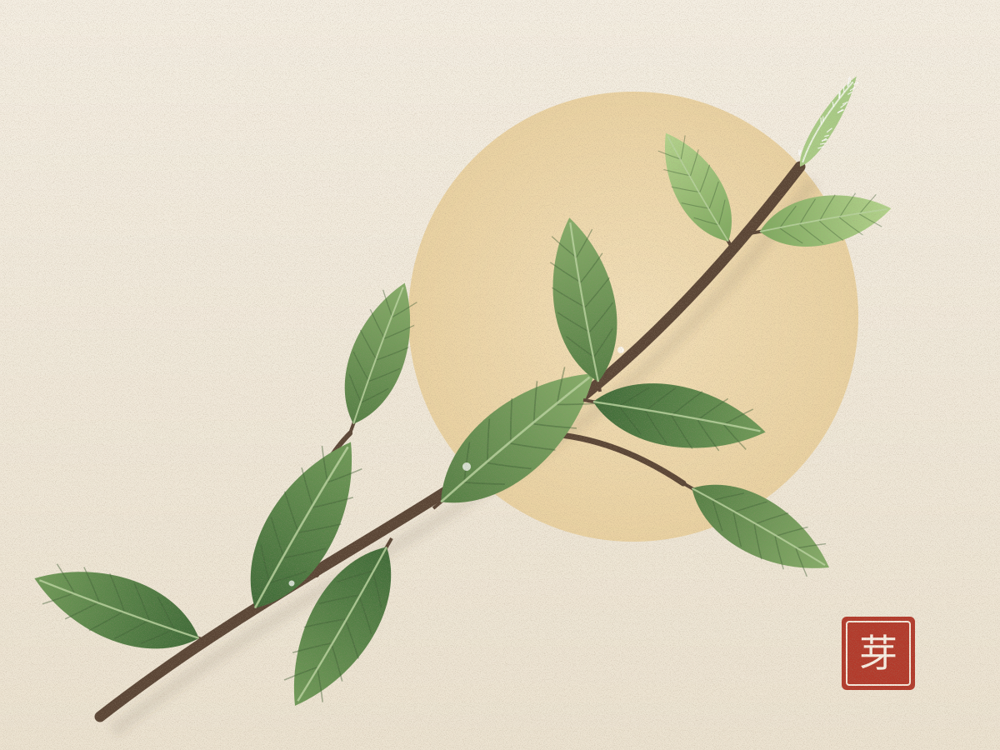

远古
约四千多年前 · 传说时代
神农尝百草，茶的发现
相传上古时期，神农氏为了辨别草木的药性，亲尝百草，一天之内多次中毒，偶然尝到茶树的叶子才得以解毒。这个传说说明，茶最早是作为一种药物被人们认识和利用的。
到了西汉，四川一带已经出现了茶叶市场。王褒《僮约》中“烹荼尽具”“武阳买荼”的记载，是世界上关于饮茶和茶叶买卖最早的文字记录之一。
“神农尝百草，日遇七十二毒，得荼而解之。” —— 相传出自《神农本草经》，“荼”即古代的“茶”字